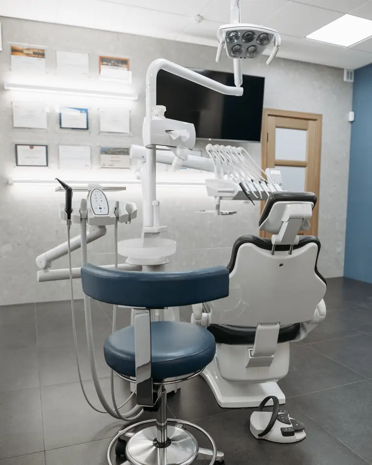
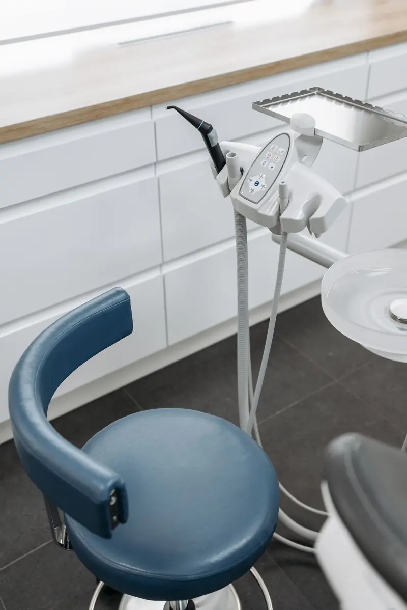

Before your first visit.
What to bring, how the schemes work at the counter, how to pay, and what the clinic is like. Everything a first-timer asks the front desk, written down, so the visit itself holds no surprises.

Before you come.
Arrive five minutes early for the one-page form. If you are running late, message the front desk on WhatsApp and she will move things rather than rush you.
If you are anxious, say so on the form. We agree a hand signal before anything starts: you lift a hand, we stop. About one first-timer in five uses it, and nobody has ever been judged for it.
- NRIC or passportNeeded
- CHAS card, or the HealthHub appIf you have one
- Your medicines, or a list of themIf you take any
- X-rays from another clinicOptionalWe can request them for you; it usually takes about a week.
- A child under sevenBring a toySomething from home to hold. The chair goes up and down and that is most of the first visit.
Schemes and payment.
All three national schemes are handled at the counter by us, not by you afterwards. The figure you see on the screen at minute 38 is the net figure after the subsidy, so there is no arithmetic to do at the desk.
- CHASBlue, Orange, Green, Merdeka, PioneerSubsidy comes off at the counter. The amount depends on the card and the procedure, and you are told the net figure before you start.
- MediSaveSurgical itemsWisdom teeth, surgical extractions, implants, gum surgery, within the Ministry of Health claim limits. We file the claim; bring your NRIC.
- Baby BonusCDA accountChildren's treatment can be paid from the Child Development Account with the linked NETS card on the day.
- Paying the restCash, NETS, PayNow, Visa, MastercardNo instalment plans, no packages, no memberships, no deposits.
The clinic.
Two treatment rooms, one X-ray room, and a front room with six chairs and a kettle. The X-rays are digital, so a bitewing is read on the screen in the room with you, not sent away. Instruments come out of the autoclave in sealed pouches, and the pouch is opened in front of you.
There is a step of about 4 cm at the front door; tell us and we bring the ramp out. One toilet, inside the clinic. Public parking is the Seng Poh Lane car park, about 60 metres away. The kettle is for you; the biscuits are mostly for the front desk.
